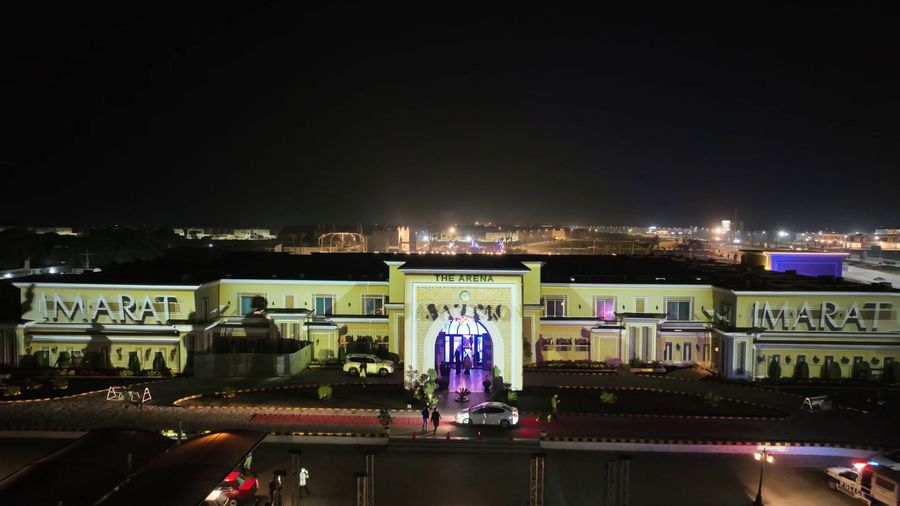

Budgeting a projection mapping show: what drives the cost
How to budget a projection mapping show: surface, content, equipment, crew, permits and contingency, where costs leak, and what to send a studio for a quote.

The first question most clients ask us is how much a projection mapping show costs, and the honest first answer is that it depends on a handful of decisions that can be made on paper before anyone touches a projector. A building that is easy to access, a short run and modest brightness needs a very different budget from a tall facade, a multi-night festival and a live broadcast. At AKS we scope shows for heritage buildings, launches and public events, and the pattern is consistent: cost follows surface size, light output, content ambition, duration and risk. This note explains each driver, where budgets tend to leak, and what to prepare so that a quote you receive is one you can compare.
Start with the surface, not the screen
The surface sets the technical bill more than any other single factor. A larger facade needs more projected light, and more light means more projectors, more power and more rigging. The area is only part of the story. Dark stone, glass, deep window reveals and strong colour all absorb or scatter light, so a modest wall can demand more output than a larger pale one. We cover this in how wall material affects projection mapping and projector brightness. Ask your studio to base the estimate on a survey or at least photographs and drawings of the real building, not on a rule of thumb.
Distance matters too. Throw distance decides which lenses are needed and where the projectors can sit. If the only viable positions are across a road or a river, the equipment list changes and so does the access plan. Our guide to projector placement explains the trade-offs.
The main cost blocks
Most projection mapping budgets divide into the same blocks. Knowing them lets you see what a quote includes and what it quietly leaves out.
- Creative and content. Concept, storyboard, design, animation, 3D work, rendering and revisions. This is labour, and it grows with running time, visual complexity and the number of approval rounds.
- Technical design. Survey, building model, projector layout, previsualization and calibration planning.
- Equipment. Projectors and lenses, media servers, network, cabling, power distribution, spares and protective housings.
- Installation and operation. Rigging, scaffolding or lifts, alignment, rehearsals, show operators and engineers for every performance night.
- Audio. Sound design, playback and speakers if the show has a soundtrack.
- Site and compliance. Permissions, security, traffic management, generators and weather protection.
- Contingency. Time and money held for the things that go wrong.
Content is the block clients most often under-estimate. A show is not a video looped on a wall. Every second of footage is designed to the geometry of one specific building, and a longer or more detailed story takes proportionally more design and rendering time. A one-minute sequence with a clear idea is usually better value than five minutes stretched thin.
Duration, nights and repeat runs
Once the system is installed and aligned, extra performance nights cost less than the first, because the largest effort is setup. Crew, security and power still apply every night, so the saving is real but not unlimited. If you are choosing between a single spectacular night and a short run, ask for both options priced side by side. A short run also gives you a safety margin if weather forces a cancellation, a point we discuss in weather-proofing outdoor projection mapping.
For long events or touring formats, ask whether the content and calibration work can be reused. A show designed for one building does not transfer directly to another, but sequences, soundtracks and pipelines often can.
Where budgets leak
The expensive surprises are rarely in the projector hire. They come from items that were not decided early:
- Late content changes. New logos, new copy or a changed storyline after rendering has started means redoing finished work. A clear approval process, such as the one in content review and approvals, protects the budget.
- Site access. Lifts, scaffolding, overnight security and road closures can add up quickly, particularly at protected or busy locations.
- Power. A venue without suitable supply needs generators and distribution. See power and signal cabling.
- Permissions. Approvals take time and sometimes carry fees or conditions that shape the design. Read permissions for public projection mapping shows early.
- Redundancy. Spare projectors and a backup server feel like waste until they are needed. Our note on backup and redundancy explains what is worth carrying.
- Filming and streaming. Capturing the show for broadcast or social media is a separate production with its own crew and camera positions. See filming and livestreaming a projection mapping show.
Ways to reduce cost without weakening the show
The best savings come from design decisions rather than from cutting equipment. Focus the projection on the architectural features that carry the story instead of covering every surface. Choose a running time the content team can finish well. Pick a viewing area that matches the position of the projectors so you do not need extra stacks for off-axis angles, which our guide to audience sightlines covers. Where a permanent or very bright, daylight-visible display is required, compare the full life cost of projection against an LED facade using projection mapping or LED facade: how to choose.
It is also worth reviewing the schedule. Rushed timelines raise cost because work that could be sequential has to run in parallel, and a build with no slack leaves nothing for revisions. Our show week schedule shows how much time a well-run installation really needs.
What to send a studio to get a useful quote
A quote is only as good as the brief behind it. The more of the following you can supply, the less a studio has to assume, and assumptions are where price gaps between bidders come from.
| Item | Why it matters |
|---|---|
| Location and photos | Shows surface, access, viewing area and likely projector positions |
| Drawings or scans | Allows accurate content design and alignment planning |
| Date and number of nights | Sets crew, hire period and weather risk |
| Running time and purpose | Drives the content workload |
| Expected audience and viewing positions | Decides brightness, placement and crowd management |
| Branding and message requirements | Avoids late changes |
| Sound, filming and streaming needs | Separate production items that are easy to forget |
| Approval contacts and permissions status | Reveals timeline and compliance costs |
| Budget range | Lets the studio propose a scope that fits instead of guessing |
Sharing a budget range is not a weakness. It lets us tell you what is realistic, suggest a smaller or more focused show if needed, and avoid spending your time on a proposal that cannot be delivered. A studio that will not discuss budget openly cannot help you plan.
Comparing quotes fairly
When two quotes differ widely, check what each includes before looking at the totals. Confirm the number of projectors and their output, whether spares and operators are included, how many revision rounds the content allows, who handles permissions and site costs, and what happens if weather cancels a night. Ask for the assumptions in writing. A lower figure that leaves out redundancy, rehearsal time or content revisions is not a lower cost, only a deferred one.
Experience also shows in the plan. Our work has included projects at Parliament House in Islamabad, the Pakistan Monument and Mohatta Palace, and a 2nd place at the World Championship of Projection Mapping at the Festival of Lights in Berlin in 2019. What those projects share with a small commercial show is the discipline of settling the surface, the content scope and the site logistics before committing to a price.
If you are planning a launch, a heritage event or a festival piece and want a clear picture of what it will take, send us the location, the date and your budget range through the contact section. We will respond with a scoped plan and an honest view of what the show can achieve.
Planning a projection mapping budget?
Tell AKS Creative Studio the building, the date and the range you have in mind, and we will shape a show that fits it.
Start a conversation ↗